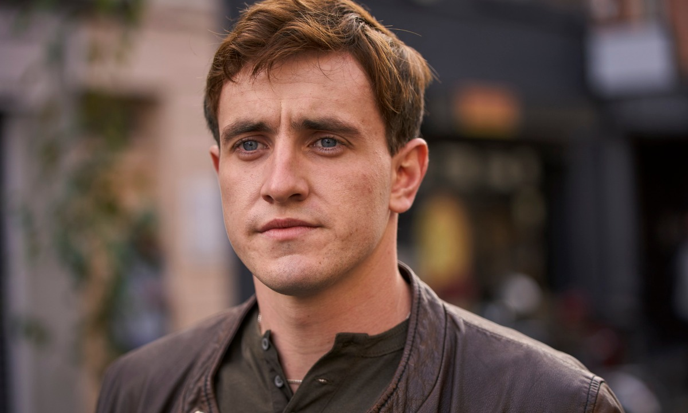
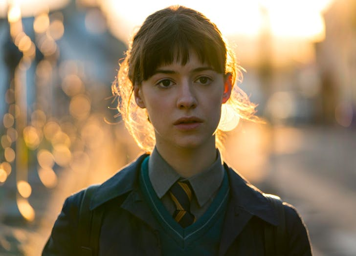

Paul Mescal

Paul Mescal (Maynooth, Irlanda; 2 de febrero de 1996) es un actor irlandés. Inició su carrera en 2013 como actor de teatro apareciendo en numerosas obras en Dublín. Posteriormente, ganó reconocimiento en la televisión protagonizando la miniserie Normal People con el personaje de Connell Waldron, actuación con la cual sería nominado a los premios Emmy.
Paul Mescal nació el 2 de febrero de 1996 en Maynooth, un pueblo del Condado de Kildare (Irlanda), hijo de Paul, un profesor de secundaria, y Dearbhla, una policía.
Durante su infancia, soñó con ser un jugador de fútbol profesional y perteneció a varios clubes. Sus compañeros lo describían como un gran jugador, principalmente por su agilidad.
Sin embargo, Mescal abandonó los deportes tras haber sufrido una lesión en la mandíbula durante un partido.
Luego de culminar la secundaria, estudió actuación en el Trinity College de la Universidad de Dublín, inspirado por su padre, quien siempre quiso ser un actor profesional pero nunca tuvo la oportunidad. Mescal se graduó en 2017 y desde entonces comenzó a aparecer en distintas obras desarrolladas en Dublín basadas en libros como El gran Gatsby, El sueño de una noche de verano y Retrato del artista adolescente.
En 2020, protagonizó la miniserie Normal People, adaptación del libro homónimo escrito por Sally Rooney.
La serie recibió la aclamación de la crítica y Mescal fue alabado por su actuación como Connell Waldron. Gracias a ello, fue nominado a los Primetime Emmy Awards de 2020 como Mejor Actor de Miniserie o Telefilme.
Sobre los actores
Daisy Edgar-Jones

Daisy Edgar-Jones es una actriz londinense, nacida en 1998. Desde pequeña estuvo en contacto con la industria televisiva y cinematográfica, pues su padre fue director de Sky Arts, una empresa de entretenimiento muy importante en Reino Unido. Estudió la universidad en Woodhouse Jones y, posteriormente, fue admitida al National Youth Teather. Su primera aparición fue en Outnumbered, una producción original de la BBC en el 2016.
Poco tiempo después, Daisy obtuvo un papel secundario en Testigo mudo y uno recurrente en la serie Gentleman Jack.
Para el 2019 Daisy participó en la miniserie La Guerra de los Mundos, una nueva adaptación de la BBC del clásico de ciencia ficción de H.G. Wells, y en Cold Feet. Ambos proyectos le ganaron popularidad a Daisy en el Reino Unido, sin embargo, fue el papel de Marianne en Normal People el que la proyecto a nivel internacional. Normal People está basada en el libro de la alabada escritora, Sally Rooney.